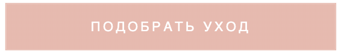
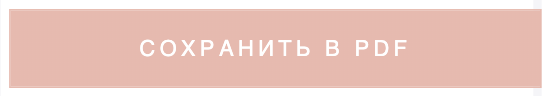
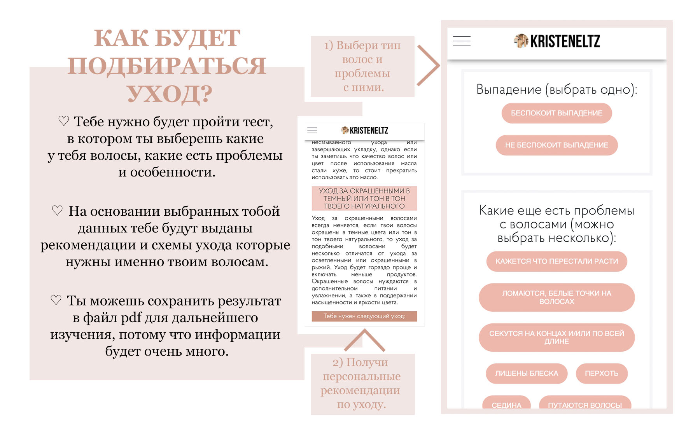
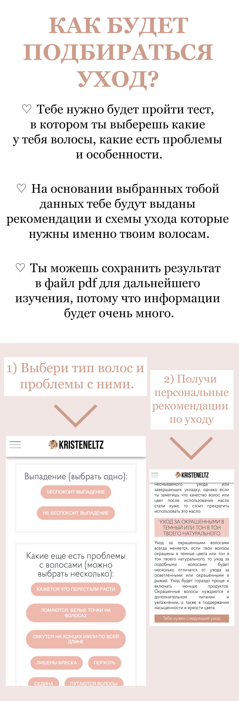

1) Тебе нужно будет выбрать свой тип и структуру волос, как и чем окрашенные или нет, а также проблемы которые у тебя есть с волосами.
2) После нажатия кнопки подобрать уход , тебе будут выданы блоки с рекомендациями по уходу только исходя из твоего выбора.
3) Рекомендуется сохранить выданный результат в файл pdf , для того чтобы можно было подробно все изучить, так как информации будет очень и очень много.
4) Для корректной работы рекомендуется открывать сайт через последнюю версию браузера Chrome.


Для доступа тебе нужно нажать кнопку купить сейчас и оплатить 350 рублей.
Система оплаты проходит через PayPal, ты можешь оплатить с любой банковской карты.
После оплаты, на почту указанную при оплате, придет письмо с подтверждением регистрации.
Нужно будет пройти по ссылке в письме и создать пароль. После чего можно будет войти на страницу подбора ухода.
Все происходит автоматически, тебе не нужно ждать ответа от человека.
Если тебе не удобно оплатить картой через PayPal, то ты можешь написать на почту kristeneltz@yandex.com, я отправлю тебе реквизиты для перевода на карту Сбербанка. В таком случае доступ будет создан вручную, после оплаты.
* Доступ на эту страницу оплачивается всего-лишь один раз и навсегда, в дальнейшем когда у тебя будут меняться волосы или появляться другие проблемы, которых раньше не было, например ты окрасила волосы из рыжего в блонд или у тебя началось выпадение или перхоть, то ты можешь снова выбрать новые параметры и тебе выдастся новый список по уходу, уже исходя из новых данных.